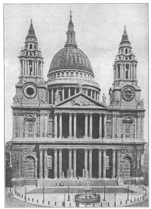

HAVE you a bicycle? Where I used to live, most boys had bicycles. We used to ride our bicycles out to a field where we could play baseball. One afternoon one of the boys was late getting there. But when he did come he broke up the baseball game. He had left his bicycle at home and was driving a goat hitched to a little cart. At once all of us other boys wanted a goat too, even though a goat wasn’t nearly so good for getting anywhere in a hurry.
And that is just like what happened three hundred years ago in England. An architect named Inigo Jones went to study architecture in Italy. He saw the Italian Renaissance buildings there. He studied the old Roman buildings, and when he got back to England he began designing Renaissance buildings. They were new to Englishmen, just as the goat was new to us boys, and every one wanted a Renaissance building just as all of us wanted a goat.
Renaissance architecture was late in reaching England, just as the boy with the goat was late in reaching the ball game, but when it finally did get there, nothing else would do.
Soon a great palace for the king, called the Palace of Whitehall, was designed in the Renaissance style. But the only part of the design that was built was the banqueting hall. This was Inigo Jones’s best-known piece of architecture. The Banqueting Hall of Whitehall became a famous building. It looks something like the Petit Trianon at Versailles. It was the first of many English buildings based on the Roman and Italian designs.
Do you remember that mixy paragraph about insides and outsides, in Chapter 21? Well, the Banqueting Hall is a good example of the outside not being the outside of the inside. The outside looks like a building with two stories, but there is only one story inside—just one big room with a balcony around the walls.
The Banqueting Hall is, however, a beautiful building both inside and out. Notice the Roman columns and the rusticated stone-work at the street level, just like the Italian Renaissance buildings. The Banqueting Hall is still called by that name, although it was used as a chapel for many years and finally turned into a museum.
The next great architect in England after Inigo Jones wasn’t an architect at all. At least, not at first. He was an astronomer and a college professor. He was Sir Christopher Wren.
Sir Christopher Wren became famous as an architect because of a fire. It was one of the biggest fires in the history of the world and happened in 1666. A building in London took fire. The fire spread to other buildings and could not be stopped. Soon a large part of London was burning down. “London Bridge is burning down” would have made a good song for 1666. Besides London Bridge and thousands of other buildings, over fifty churches were burned. The biggest of these was old St. Paul’s Cathedral. Sir Christopher Wren was given the job of making new designs both for St. Paul’s and for the other churches.
Sir Christopher thought Gothic was a poor kind of architecture. He liked the Renaissance style and so he built the new St. Paul’s Cathedral as a Renaissance building.
Like the Gothic cathedrals, St. Paul’s is in the form of a cross. Over the crossing Sir Christopher erected a very large dome with a stone lantern on top. Really it is a three-in-one dome—an outside dome, an inside dome for a ceiling, and a brick dome between the other two. This brick dome between the other two was made to hold up the heavy stone lantern.
The outside of St. Paul’s has two orders of columns, one above the other like the Banqueting Hall. This makes St. Paul’s look better than St. Peter’s in Rome, because the two orders give a better scale to judge the height by, than the one order of huge columns on St. Peter’s.
Unfortunately, St. Paul’s wasn’t very carefully built. The walls were filled with poor materials and the building in time became unsafe. Several years ago it was closed while workmen strengthened the foundations and the supports. Now it is again open and strong enough not to collapse.
Sir Christopher Wren himself is buried in St. Paul’s. On his tomb, in Latin, is carved,“If you would see my monument, look around you.” St. Paul’s is indeed his monument, the great landmark of London and the largest cathedral in England.

No.83-2 ST. PAUL’S, LONDON（伦敦圣保罗大教堂）
As for Sir Christopher Wren’s other churches, no two of the more than fifty, are alike. Some are noted for the outside design, many for their beautiful interiors, and many more for their graceful steeples. In fact Sir Christopher Wren is famous for his Renaissance steeples. People liked them so well that even in the American colonies churches were built with steeples that look like his designs.
Books were now published giving the rules and designs for Renaissance architecture and many buildings were put up from designs and descriptions in these books. Palladio’s book on architecture was translated into English and was used by architects in both England and America.
Renaissance architecture was used after Sir Christopher Wren’s death for many years in England. Under the kings George I, George II and George III the English Renaissance architecture had reached a style all its own. This is called the Georgian style. I’ll tell you more about the Georgian style when we come to American architecture.
你有自行车吗？我住的地方，大多数男孩都有自行车。我们常常骑着自行车到野外去打棒球。某天下午，有个男孩来迟了。但他的到来却使我们停止了打球，因为他把自行车丢在家，却骑着头山羊来，后面还套着辆小推车。一时间我们大家也都想要有头山羊了，尽管山羊对要赶路的人来说根本就不实用。
这有点像英国三百年前发生的一件事。当时有位叫伊尼哥·琼斯的建筑师到意大利去学习建筑。他看到意大利有许多文艺复兴式建筑，但他却学习了古罗马建筑。他在回到英国后，却又开始设计文艺复兴式建筑。这种建筑风格对英国人来说是新鲜的，就像山羊对我们男孩一样。人人都想拥有一栋文艺复兴式建筑，就像我们男孩都想得到山羊一样。
文艺复兴式建筑很晚才到达英国，就像那个骑着山羊的男孩很晚才赶到棒球场一样，但当山羊最终到达后，却又摆不上别的什么用场。
很快，一座大王宫，便按文艺复兴式建筑风格进行了设计，它叫做“怀特豪尔宫”。但是按设计建成的那部分却只有宴会厅。这就是伊尼哥·琼斯最著名的一件建筑作品。怀特豪尔宫的宴会厅成了一栋著名的建筑物。它看起来有点像凡尔赛的小特里阿农宫。它是英国按罗马和意大利建筑风格而设计的第一座建筑物。
还记得在第21章某一段里我们将建筑物的内部和外部放在一起来谈的吗？怀特豪尔宫宴会厅是一个重外轻内的典型范例。建筑物外部看起来像有两层楼，但实际上，里面只有一层——只是一个四面都有阳台的大房间。
然而，宴会厅是一座漂亮的建筑物，内外都一样抢眼。看看它那些临街的罗马式柱子和粗糙质朴的石块，简直就像是意大利文艺复兴式建筑物。宴会厅一直还叫宴会 厅，尽管它被用作礼拜堂很多年，但最终被用作博物馆。
英国在伊尼哥·琼斯之后接下来的一位伟大建筑师，却不是搞建筑的。至少一开始不是。他是一位航天员和大学教授。他就是克里斯多弗·雷恩爵士。
克里斯多弗·雷恩爵士因为一场大火而成了一名著名的建筑师。这是1666年发生的世界上最大的火灾之一。伦敦一栋大楼突然起火，火势迅猛，难以泼灭，很快就蔓延到其他建筑物。没过多久，伦敦的一大片区域都被烧毁了。《伦敦桥被烧毁》这首歌唱的就是1666年的那场大火。除了伦敦桥和成千上万栋建筑物外，还有五十座教堂被烧毁。其中最大的一座教堂是古老的圣保罗大教堂。克里斯多弗·雷恩爵士受命重新设计圣保罗大教堂和其他教堂。
克里斯多弗爵士认为哥特式建筑丑陋不堪。他喜欢文艺复兴式建筑风格，所以他就把新的圣保罗大教堂建成了文艺复兴式。
圣保罗大教堂和哥特式大教堂一样，也取十字形样式。但在交口处上方克里斯多弗爵士建了一个非常大的圆顶，再安上一座石制顶灯。圆顶实际上是三层一体的——外面圆顶，里面是圆顶的天花板，中间是砖砌夹层。这个砖砌夹层在圆顶中支撑着很重的石制顶灯。
圣保罗大教堂的外部有两层柱子，一排在另一排上面，像宴会厅一样。这就使它比罗马的圣彼得大教堂更好看，因为圣保罗大教堂的双层柱要比圣彼得大教堂的单层巨柱在判断高度上能提供一个更好的比例。
不幸的是，圣保罗大教堂建造得有点粗心。墙壁材料质量低劣，久而久之，整个教堂就会倒塌。几年前，工人们给大教堂的地基和支撑结构进行了加固，有一段时间教堂没有开放。如今大门又敞开了，大教堂加固了，不会倒塌了。
克里斯多弗·雷恩爵士自己就葬在圣保罗大教堂里。他的墓上用拉丁语刻着：“如果你想看看我的纪念碑，那就看看你的周围吧。”圣保罗大教堂就是他的纪念碑。圣保罗大教堂不仅是英国最大的教堂，而且是伦敦的伟大丰碑。
说到克里斯多弗·雷恩爵士所设计的其他五十多座教堂，没有哪两座是相似的。有些因外部设计出名，大多因漂亮的内部装饰知名，更多则因优雅的尖塔闻名。事实上，克里斯多弗·雷恩爵士是因他设计的文艺复兴式尖顶而扬名天下。人们非常钟爱这种设计，以至于美洲殖民地教堂也修建了类似于他设计的尖顶。
关于文艺复兴式建筑规则和设计的书籍今天都有出版，许多建筑物正是依据这些书上的描述和设计而诞生。比如帕拉迪奥论建筑的书就已译成英语，被英国和美国的建筑师们广泛使用。
英国在克里斯多弗·雷恩爵士死后很多年后还在使用文艺复兴式建筑风格。在乔治一世、乔治二世和乔治三世统治时期，文艺复兴式建筑在英国形成了自己特有的风格。它被称作“乔治风格”。我们在后面谈论美国建筑时，会更多地涉及乔治风格。